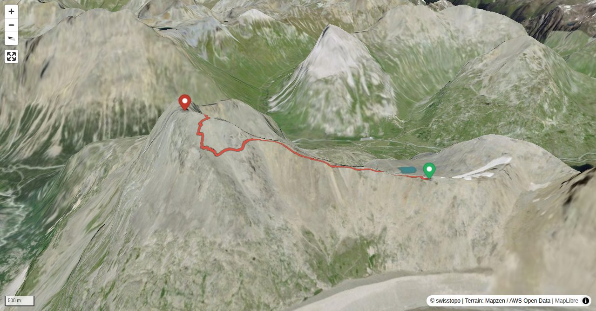

Der Sage nach lebte an diesem Berg einst eine schöne Fee in einem Felsenschloss. Manchmal sahen Jäger die Fee beim Bad im Lej da Diavolezza und waren von ihrer Schönheit hingerissen. Manche Jäger versuchten, der Fee zu ihrem Schloss im steilen Fels zu folgen, blieben aber am Berg verschollen. Seither heisst der Berg Munt Pers, der verlorene Berg. Heute ist der Gipfel mit der Luftseilbahn und einem sicheren Pfad erschlossen. Viele brechen die leichte Wanderung jedoch ab, weil ihnen die allzu schnell erreichte Höhe zu schaffen macht.
Der Sass Queder (Südgipfel) ist von der Diavolezza in ca. 30 Min. erreichbar (weiss-rot-weiss markiert, T2).
Quick Facts
| Summit elevation | 3207 m |
|---|---|
| Difficulty | SAC T2 Mountain hiking on marked trails with uneven terrain and some sustained ascent. Guide |
| Trailhead | Diavolezza, summit station |
| Region | Engadin |
| Canton | Graubünden |
| Distance | 2.0 km (out-and-back) |
| Total ascent | ~243 m |
| Elevation range | 2969-3207 m |
| Route sources | SAC Route Portal |
Photos


Planning
i
i
sac_scale (precise T1–T6) with
swissTLM3D Wanderwegart
fallback where OSM is silent (coarser T2/T3 and T4+ buckets).
Coverage: OSM 100.0% · swisstopo 0.0% · unknown 0.0%.Elevations computed from the inlined GPX track (SwissTopo height API).
Loading forecast…
Start: Diavolezza, summit station (2972 m)
Route returns to Diavolezza, summit station.
3D Terrain View

Route Details
Südostgrat
Terrain & safety
Bergweg, weiss-rot-weiss markiert, bis zum Gipfel. Steinig und eine gewisse Stolpergefahr, aber nirgends gefährlich, sofern man den Weg nicht verlässt.
Source: SAC Route Portal
Field Reference
| Trailhead | Diavolezza, summit station | 46.41190, 9.96500 |
|---|---|---|
| Summit | Munt Pers (3207 m) | 46.42146, 9.95349 |
Coordinates are WGS84 decimal degrees (lat, lon). Emergency: 112 (general) or 1414 (Rega air rescue). Page URL: